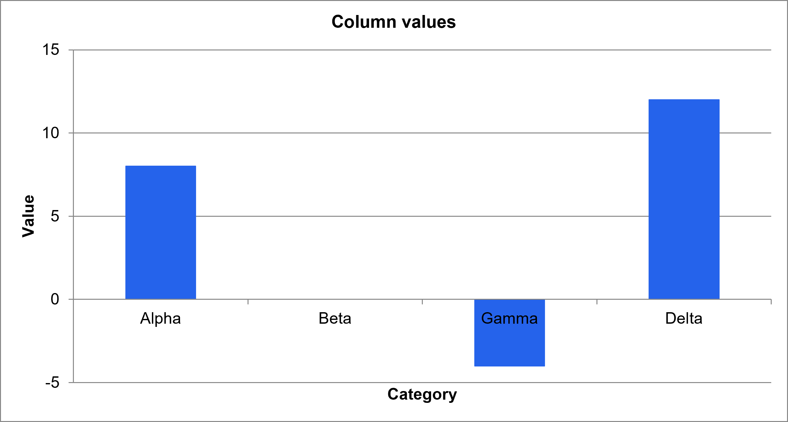
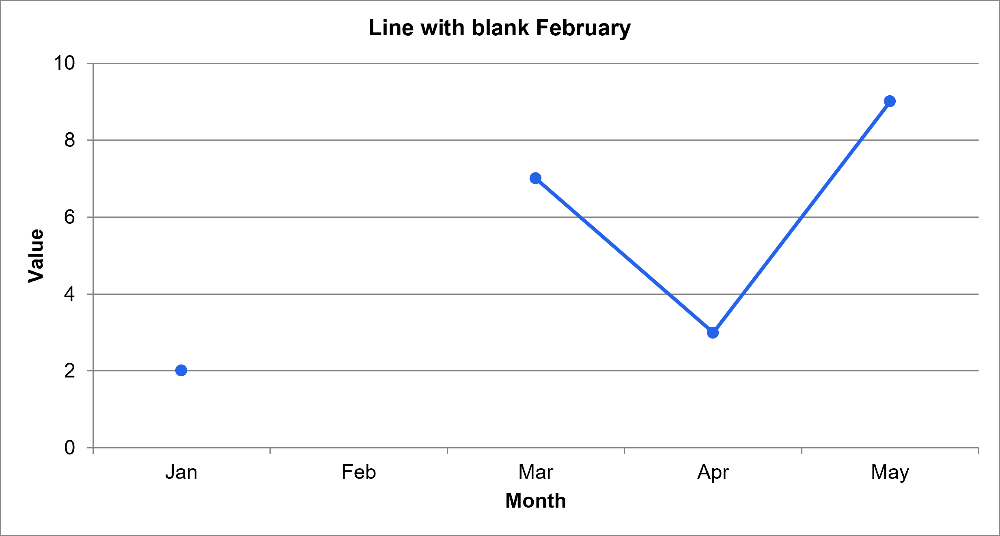
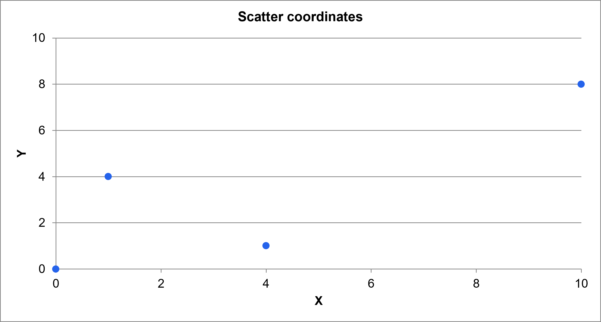

Local validation · Diagnostic preview
Native Excel chart captures
Explore three chart images exported by Microsoft Excel. This page checks how native captures reach the browser and provides the corresponding workbook.



Workbook: chart-cases.xlsx
SHA-256 of the workbook served by this page:
These are Excel’s own images. This diagnostic establishes native-image delivery; comparison with an independent browser renderer is a separate validation. Images fit the available width while preserving their aspect ratio.